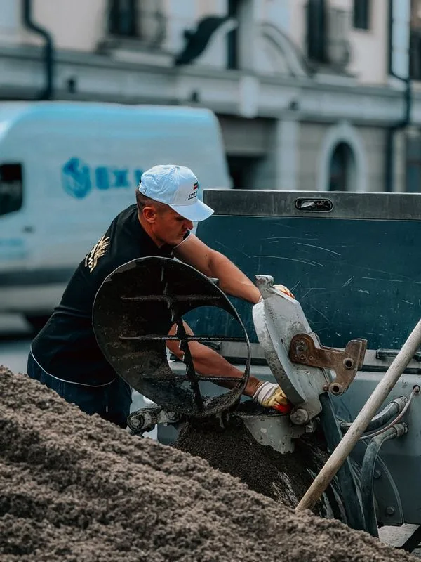

Wet Process Areas
Dyeing, printing and finishing zones marked with water needs.
Prachi Construction Projects handles the civil shell, wet-area flooring and coordinated water and drainage routes for textile processing houses in Surat. Call +91 76004 90851 to discuss dyeing, printing or finishing unit work.
Textile processing house construction covers the building and civil services behind dyeing, printing and finishing. Our work includes the shell, internal divisions, wet-area flooring and coordinated water and drainage routes. The exact ETP-related civil scope is agreed after drawing review.
Wet processes put different demands on a building than a dry loom shed. Floors, channels, ventilation and access must work together so water stays where intended. We fix service routes before flooring is cast. [CONFIRM WITH OWNER: exact scope of ETP and drainage civil work we execute]
See the textile construction guide, gala units, waterjet sheds, loom foundations and cost factors. See projects or contact us with your flow sketch.
Each item is defined with the owner before work moves to the next stage.
Dyeing, printing and finishing zones marked with water needs.
Partitions and doors keep dry storage away from wet work.
Falls and finishes follow the requirements you approve.
Inlet routes and points coordinated with the machine layout.
Process drains and channels set before the floor closes.
Power and steam points recorded for your suppliers. [CONFIRM WITH OWNER: power and steam scope at site]
A sequence that keeps wet-area services ahead of the flooring.
Send the process flow, machine positions and utilities.
We check levels, access and connection points.
Zones, drains, channels and openings are marked together.
Structure, partitions and finishes follow the sequence.
Falls, channels and access are reviewed with you.

A processing house needs clear boundaries between wet and clean areas. Dyeing and printing generate water at the machine line; storage prefers dry space. We agree the arrangement, then place partitions, falls and channels.
Ventilation, heat and moisture are discussed with the envelope. Chemical-aware finishes follow your process requirements; we name no brands without approval. [CONFIRM WITH OWNER: exact scope of ETP and drainage civil work we execute]

Materials follow the approved specification. In wet zones, the finish and its joints matter as much as the structure below.
[CONFIRM WITH OWNER: approved flooring and chemical-resistant finish specifications]
[CONFIRM WITH OWNER: approved real processing house photos and captions]
Wet areas are sequenced around decisions that cannot be changed later.
Room zones, falls and drain positions must be settled before flooring.
Drawing and site approvals affect when civil work can start.
Channels, waterproofing and finishes each need their own window.
Late changes to machine or utility details can hold up finished areas.
[CONFIRM WITH OWNER: typical timeline for a textile processing house]

This work suits units where water, drainage and floors must be right before equipment arrives.
Review the pillar guide, see projects, or contact us.
We take up civil work for processing houses in Surat and nearby industrial areas.
[CONFIRM WITH OWNER: confirmed service areas]
Questions from owners planning dyeing, printing and finishing units in Surat.
Tell us about your plot, machines and timeline. We will give you a clear written estimate and a practical build plan.